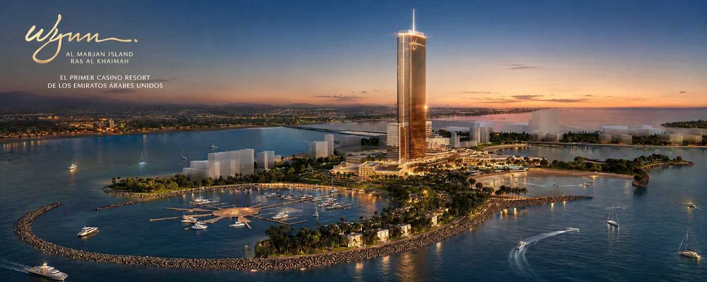

- RAK es un emirato emergente, con tickets generalmente más asequibles que Dubai.
- El catalizador es el resort integrado Wynn Al Marjan, con apertura prevista en 2027.
- Perfil dominante: revalorización por el desarrollo turístico, con riesgo de mercado emergente.
- Encaja como complemento a una cartera con base en Dubai.
Cuando un inversor descubre los Emiratos, suele pensar solo en Dubai. Pero el mapa es más amplio, y uno de los movimientos más interesantes de los últimos años está ocurriendo un poco más al norte: en Ras Al Khaimah.
Dónde está y qué es Ras Al Khaimah
Ras Al Khaimah (RAK) es uno de los siete emiratos que forman los EAU, situado al norte, a aproximadamente una hora por carretera de Dubai. Históricamente más tranquilo y naturaleza-céntrico (montañas Hajar, playas, turismo), ha entrado en una fase de desarrollo acelerado que lo ha puesto en el radar inversor.
El efecto Wynn Al Marjan
El gran catalizador es Wynn Al Marjan Island: un resort integrado de lujo en construcción en la isla artificial Al Marjan, con apertura prevista para 2027. Es un proyecto de enorme escala que está actuando como imán de inversión, turismo y desarrollo inmobiliario en todo el emirato.

Los grandes resorts integrados tienden a transformar el mercado inmobiliario de su entorno: más turismo, más demanda de alquiler y presión al alza sobre los precios en los años previos y posteriores a su apertura.
De ahí que muchos inversores estén posicionándose antes de 2027, buscando capturar la revalorización asociada a la maduración del proyecto.
Por qué atrae a los inversores
- Ticket de entrada más asequible que las zonas prime de Dubai, en general.
- Catalizador concreto de revalorización (a diferencia de apostar por una apreciación genérica).
- Mismo marco país: 0% sobre rentas y plusvalías de personas físicas, regulación de los EAU.
- Producto de marca: proyectos con operadores hoteleros y firmas reconocidas (gestión hotelera, branded residences).
Tenemos proyectos seleccionados en Ras Al Khaimah
Te mostramos oportunidades en RAK alineadas con el efecto Wynn y verificadas con nuestros partners. Sin coste y en español.
Ras Al Khaimah vs. Dubai
| Factor | Dubai | Ras Al Khaimah |
|---|---|---|
| Madurez del mercado | Maduro, líquido, diversificado | Emergente, en desarrollo |
| Ticket de entrada | De asequible a muy alto | Generalmente más asequible |
| Catalizador de revalorización | Múltiple y consolidado | Concreto (efecto Wynn 2027) |
| Liquidez de reventa | Alta | Creciente, menor que Dubai |
| Perfil | Base de cartera | Complemento de revalorización |
No es necesariamente "uno u otro". Una estrategia habitual es construir la base en una zona consolidada de Dubai y añadir RAK como apuesta de revalorización.
Riesgos a considerar
- Mercado emergente: menos histórico de precios y menor liquidez que Dubai.
- Dependencia del catalizador: buena parte de la tesis descansa en la ejecución y el impacto del proyecto Wynn.
- Riesgo de off-plan: gran parte de la oferta es sobre plano (ver guía de off-plan).
- Horizonte temporal: es una tesis de medio plazo, no de renta inmediata.
Para qué inversor encaja
RAK encaja con un inversor que: tiene horizonte de medio plazo, busca revalorización más que renta inmediata, acepta el perfil de riesgo de un mercado emergente y quiere diversificar dentro de los Emiratos. Para entender el conjunto, empieza por la guía pilar de cómo invertir en inmuebles en Dubai (los principios aplican a todo el país).
Preguntas frecuentes
Fuentes y metodología
- Volumen de mercado de los emiratos del norte (incl. RAK): registros oficiales 2025, dentro del agregado de operaciones de los EAU.
- Wynn Al Marjan Island: información pública del proyecto (apertura prevista 2027).
- Caracterización de mercado emergente y rangos: informes del sector (JLL, Knight Frank) y portales (Property Finder, Bayut), 2024–2025.
Información orientativa, no asesoramiento ni recomendación de inversión. La inversión en mercados emergentes y en off-plan conlleva mayores riesgos. Horizonte Emirates es un servicio de Propulse SLU (Andorra) y no presta asesoramiento fiscal, jurídico ni financiero.